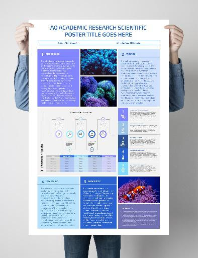

Poster Presentation
- Posters must be mounted on a sturdy backing of 1-inch thickness to ensure proper display.
- Poster Format:
- Dimensions: 36 inches (length) x 24 inches (width) in portrait format (2 feet wide & 3 feet high).
- Posters exceeding this size will not be accommodated.
- Clearly indicate the title, author names, and affiliated institutions at the top of your poster.
- Ensure legibility with a clear font style and size. Use high-resolution images and graphics for better visibility.
- Keep the content concise and visually engaging. Use bullet points, graphs, and diagrams where appropriate.
Presentation Guidelines
- Presenters must bring their posters already mounted on a backing board of 1-inch thickness.
- Arrive at the venue at least 30 minutes before the session begins to set up your poster.
- Each poster will be assigned a designated display area. Ensure your poster is placed correctly before the session starts.
- Presenters must be available at their posters during the assigned session to discuss their research and answer questions.
- Posters should remain displayed for the entire session and must be removed at the designated time.
Poster Submission
Please ensure that you handover the poster to the organizing committee at the registration table on Day 1 of the conference.
Your poster should include:
- Title
- Names of author/co-author (e-mail address and institutional affiliation)
- Introduction (problem statement & research objectives)
- Research questions
- Methodology
- Conclusion, and
- References (2- 3)

Poster viewing session and Evaluation
- All posters fulfilling the entry criteria will be entered into a competition and evaluated by judges.
- Based on the results, first, second, and third place winners will be announced at the end of the session
Additional Notes
- Use minimal text with clear headings to guide the audience through your content.
- Avoid cluttered designs—maintain a balance between text, images, and white space.
- Ensure proper contrast between background and text for readability.
For further inquiries, please contact the event organizing team. We look forward to your participation!